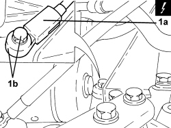

5510C42 DETONATION SENSOR (ONE) - R.R.
- Path
- Procedures > 55 ELECTRICAL EQUIPMENT > 5510 ENGINE IGNITION > 5510C coil, ecu, sensors > 5510C42 DETONATION SENSOR (ONE) - R.R.
- Kind
- repair procedure (removal / refitting; the operation number is the code)
- Applies to
- engines: 1.4 8v; all production periods
- Interactive page
- https://sloeber94.github.io/elrnDB-fDbl/en/#/223000156
Applies to: engines: 1.4 8v; all production periods
 Removing
Removing
 Refitting
Refitting- Position the vehicle on a lift.
- Disconnect the negative battery terminal.
1. Disconnect the electrical connection (1a), undo the bolt and remove the detonation sensor (1b).
Description | Connector | |
|---|---|---|
1a | Detonation sensor -2 |

Applies to: engines: 1.4 8v; all production periods
Refitting
Removing- Place the detonation sensor back in its housing, connect the electrical connection and tighten the new bolt to the recommended torque.
Value daNm | Fastening | Component | dia | |
|---|---|---|---|---|
- | 2.2 ÷ 2.7 | Bolt (to be replaced) | Detonation sensor | M8 |
- Connect the negative battery terminal.
- Remove the vehicle from the lift.